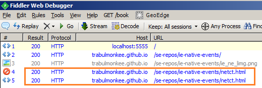

Form
Enter Text:
Image Link:
Open fiddler to see multiple requests when clicking the image link
Below is an example image of what I see in Fiddler

Debug Logs
Slow Performance Debug Log
Fast Performance Debug Log
Click Debug Log